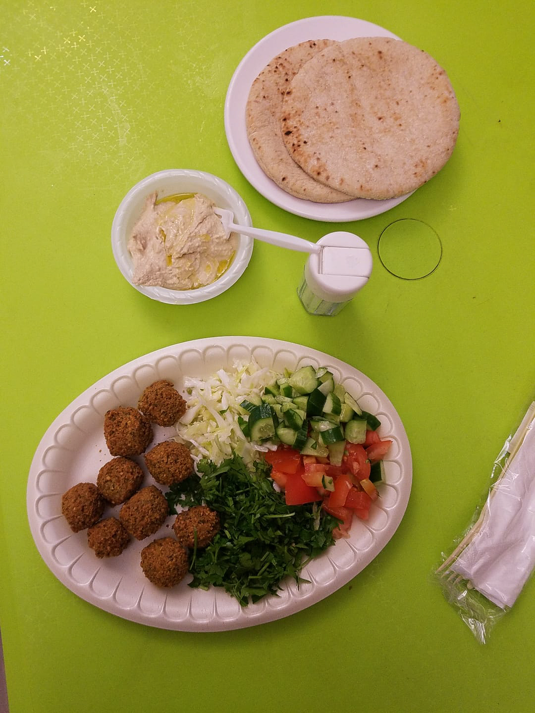
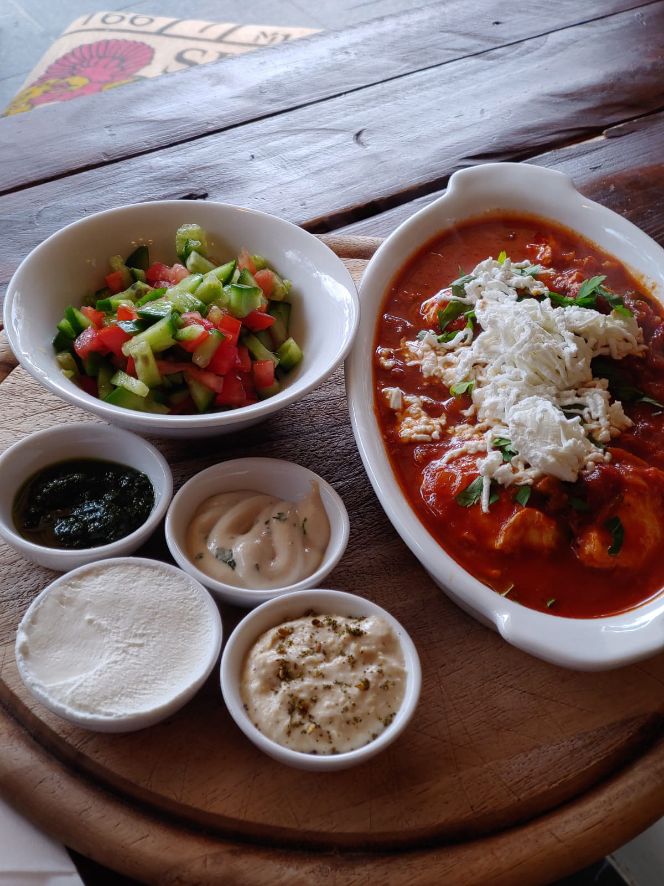
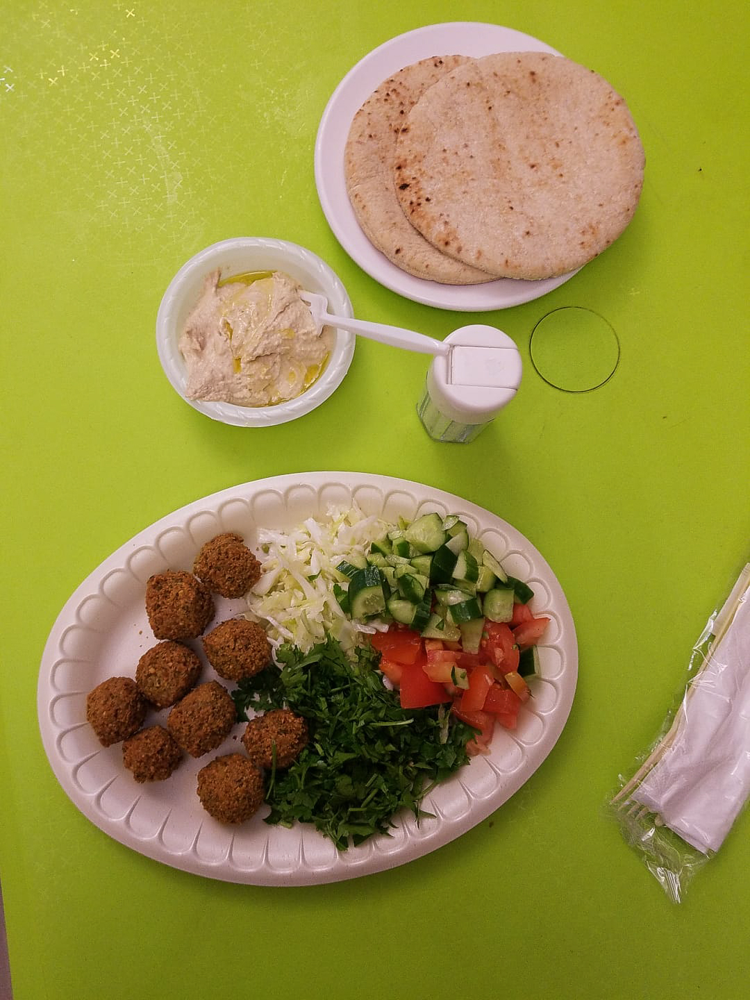
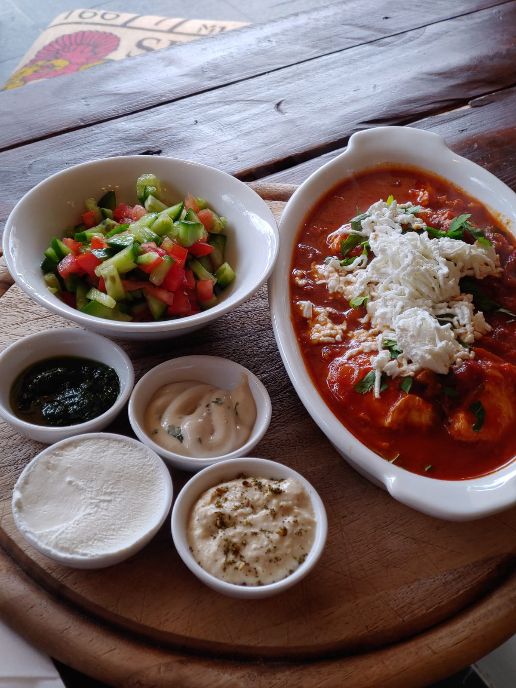

Travel photography is tricky because you have to account for several environments and subjects. For things like architecture, you'll want longer lenses and you won't need to worry about lighting as much because you're typically outside. For things like food photography, you want a very short/wide lens that lets you get really close to the food and get all the great colors and detail. You also want to make sure you have a lens with a wide aperture (the opening the light goes through) to get the most amount of light possible. The challenge with these two examples is that they're very different so you could end up carrying a lot of equipment. You want to weigh your options in terms of what equipment you bring to make sure you don't overpack, so think about what you plan to take pictures of most and plan from there.
In my experience. I tend to carry a single zoom lens that goes almost as wide as I want and almost as far as I want because I can edit the pictures later. Bringing one lens with a large zoom lets you travel lighter and not worry about carrying multiple lenses and having them break when you're switching them out. I don't always get the exact shot I want, but it's better than nothing. Below are some images from my trips to Israel and Italy prior to the pandemic.


 


